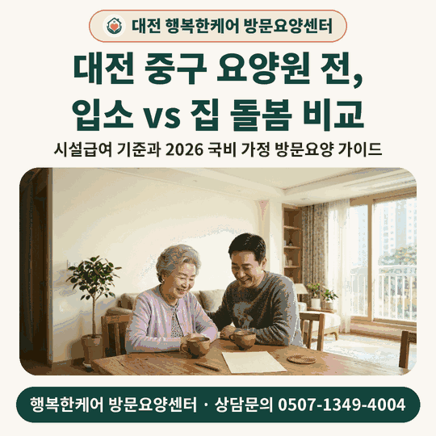

1. 대전 중구 요양원 입소 전 확인할 자격
가족분들이 대전 중구 요양원 입소를 알아보실 때 가장 먼저 확인하셔야 할 점은 어르신 장기요양인정서에 적힌 급여 종류입니다. 국민건강보험공단(1577-1000) 기준 노인요양시설 입소(시설급여)는 원칙적으로 일상생활 수행이 크게 어려운 1등급·2등급 어르신을 대상으로 인정됩니다. 3등급·4등급·5등급 어르신은 동일 세대 가족의 돌봄이 곤란하거나 치매 행동 증상·주거 여건 등 공단이 정한 예외 사유가 충족되어 급여종류 변경 승인을 받아야 입소가 가능합니다. 반면 요양보호사가 댁으로 찾아오는 재가급여(방문요양·방문목욕)는 1~5등급 어르신이라면 추가 변경 심사 없이 바로 이용하실 수 있습니다.

2. 공단 평가등급·인력배치 5가지 확인법
대전 중구 요양원 가운데 부모님께 알맞은 기관을 찾으실 때는 주변 이야기보다 노인장기요양보험 누리집이나 The건강보험 앱의 공시 자료를 먼저 대조해 보시는 것이 좋습니다. 첫째는 공단 정기평가 등급(A~E등급)과 행정처분 이력, 둘째는 입소 어르신 대비 요양보호사·간호(조무)사·사회복지사 실제 인력 비율입니다. 셋째는 중구 노후 건물 특성상 엘리베이터·경사로·화재 대피 설비와 채광 상태가 안전한지, 넷째는 보호자 면회·외진 동행 절차가 투명한지, 다섯째는 식대·간식비·상급침실료 등 매월 별도로 부과되는 비급여 항목 내역을 계약 전 명확히 안내받으셔야 합니다.
3. 시설 실비 vs 가정 방문요양 월 비용
요양원 입소와 가정 방문요양은 매월 보호자가 체감하는 비용 구조가 다릅니다. 시설 입소는 급여 비용의 20%(감경 12%·8%, 기초생활수급권자 법정 본인부담금 0%)와 별도로 매월 식재료비·간식비·이·미용비·상급병실 차액이 전액 본인 부담 비급여로 추가됩니다. 반면 2026년 장기요양수가 기준 가정 방문요양 하루 3시간(180분, 급여액 57,020원)을 이용하시면 일반 수급자(15%) 1회 본인부담금이 약 8,553원이며(감경 9% 약 5,132원·6% 약 3,421원, 기초생활수급권자 법정 본인부담금 0%·전액 국비지원), 댁 내 식단으로 식사를 챙겨 드려 별도 급식비가 들지 않습니다.
4. 3~5등급 정든 집 재가돌봄 우선 선택
대전 중구 요양원 상담을 주시는 가족분들 중에는 3~5등급 어르신인데도 낮 시간 혼자 계실 걱정에 바로 입소를 결정하려 하시는 경우가 많습니다. 그러나 거동이나 식사가 어느 정도 가능하신 단계에서 갑자기 익숙한 동네와 집을 떠나시면, 환경 변화로 인한 우울감이나 인지 저하가 오히려 빨라지는 사례를 자주 봅니다. 이때는 평일 오전이나 오후 시간대에 1:1 요양보호사가 방문해 혈압·복약 확인, 점심 식사 준비, 세이백화점 인근 산책이나 충남대병원·성모병원 외래 병원동행을 도우며 어르신 생활 리듬을 지켜드리는 재가 돌봄이 훨씬 자연스러운 대안이 됩니다.
5. 중구 태평·문화동 복지용구·목욕 연계
집에서 모시기로 하셨다면 등급별 2026년 월 재가 한도액(3등급 1,528,200원, 4등급 1,409,700원, 5등급 1,208,900원) 안에서 꼭 필요한 서비스를 촘촘히 엮을 수 있습니다. 가족이 가장 힘들어하시는 목욕은 요양보호사 2인 1조가 댁으로 와서 돕는 방문목욕(2026년 차량미이용 가정내 급여액 50,100원·일반 15% 약 7,510원)으로 주 1회 안전하게 해결됩니다. 또한 월 한도와 완전히 별도로 제공되는 연 160만 원 복지용구 한도로 전동침대·욕실 안전손잡이·미끄럼방지매트를 일반 15%(기초수급권자 법정 0%)로 대여·구입해 오래된 아파트나 주택 환경도 안전하게 정비하실 수 있습니다.
6. 대전 중구 오류동 가정 방문요양 사례
대전 중구 오류동 아파트에 혼자 사시는 80대 박OO 어르신 가정에서도 자녀분들이 처음엔 대전 중구 요양원 입소 순번을 알아보고 계셨습니다. 하지만 어르신께서 40년 가까이 지낸 집과 동네 이웃을 떠나지 않으려 눈물을 보이셔서, 저희 사회복지사가 댁을 방문해 어르신의 실제 거동과 식사 습관을 점검해 드렸습니다. 4등급 월 한도액 내에서 주 5일 오전 3시간 방문요양(식사·투약·청소·말벗)과 주 1회 방문목욕을 배치하고, 복지용구로 전동침대와 화장실 안전손잡이를 설치해 드리니 어르신께서 한층 편안한 마음으로 댁 생활을 이어가셨습니다.
7. 중구 전 지역 사회복지사 방문상담
부모님 건강 상태가 시설 입소가 꼭 필요한 단계인지, 아직 댁에서 국비 방문요양·방문목욕·가족요양으로 충분히 안전하게 모실 수 있는 시기인지는 전문적인 댁 내 평가가 큰 도움이 됩니다. 2008년 노인장기요양보험 시행 초창기부터 대전 중구 태평동·문화동·유천동·오류동·대흥동과 유성구·서구·동구·대덕구 현장을 지켜 온 공단 지정 기관 행복한케어 방문요양센터에서는 사회복지사가 직접 댁을 방문해 등급 신청 지원부터 시설·재가 급여 비교, 첫날 요양보호사 동행까지 무료 방문상담으로 꼼꼼히 안내해 드립니다.
📊 2026년 노인장기요양보험 등급별 월 한도액 · 방문요양·방문목욕 본인부담금 공식 기준표
보건복지부 및 국민건강보험공단 고시 기준, 장기요양 1~5등급 어르신이 대전 자택에서 재가급여(방문요양·가족요양·방문목욕)를 이용하실 때 국비 85~100%가 지원됩니다. 일반 수급자(15%), 감경 대상자(9%·6%), 기초생활수급권자(법정 0%) 기준 시간당·등급별 상세 내역은 아래와 같습니다.
| 구분 (급여 시간 / 등급) | 2026년 공단 급여수가 | 일반 (15%) | 감경 (9% / 6%) |
|---|---|---|---|
| 방문요양 1회 3시간 (180분) | 57,020원 | 8,553원 | 약 5,132원 / 3,421원 |
| 방문요양 1회 4시간 (240분) | 70,080원 | 10,512원 | 약 6,307원 / 4,204원 |
| 가정 방문목욕 1회 (2인 1조, 60분 이상) | 50,100원 | 7,515원 | 약 4,509원 / 3,006원 |
| 가족요양 60분 (월 최대 20일) / 90분 (월 최대 31일) | 요양보호사 자격 가족 직접 돌봄 | 주 1회 가정 방문목욕(2인 1조) 동시 병행 가능 | |
※ 등급별 월 재가급여 한도액(2026년 기준): 1등급 2,512,900원 · 2등급 2,331,200원 · 3등급 1,528,200원 · 4등급 1,409,700원 · 5등급 1,208,900원 (연 160만 원 복지용구 별도 지원). 대전 유성구·서구·중구·대덕구·동구 무료 방문상담: 행복한케어(0507-1349-4004)
📍 대전 중구 · 대덕구 · 동구 방문요양센터 — 전 지역 무료 출장 방문상담 — 대전 5개 구 출장 방문 권역 및 2026년 본인부담금 요약
대전 중구(태평동·문화동·오류동·유천동·대흥동), 대덕구(송촌동·법동·중리동·신탄진동), 동구(가오동·용운동·판암동) 전 지역 사회복지사 무료 출장 방문상담 및 근거리 베테랑 요양보호사 1:1 배정을 제공하는 행복한케어 방문요양센터입니다.
| 급여 서비스 구분 | 일반(15%) | 대전 출장 상담 지원 권역 |
|---|---|---|
| 방문요양 3시간(180분) / 4시간(240분) | 8,553원 / 10,512원 | 유성구(봉명·도안·노은·관평동)·서구(둔산·탄방·관저·도마동) |
| 2인 1조 가정 방문목욕 (60분 이상) | 7,515원 | 중구(태평·문화·오류동)·대덕구(송촌·법동)·동구(가오·용운동) |
| 가족요양 60분(월20일) / 90분(월31일) | 3,798원 / 5,118원 | 기초생활수급권자 법정 본인부담금 0% · 감경 6%~9% 적용 |
대전 방문요양 본인부담금·월 한도 · 대전 방문요양센터 방문요양·방문목욕 비용 · 대전방문요양 돌봄·병원동행 실부담 · 대전방문요양센터 가족·방문요양 비교 · 대전 서구 방문요양 180분 비용 · 대전 병원동행·가족요양 병행법